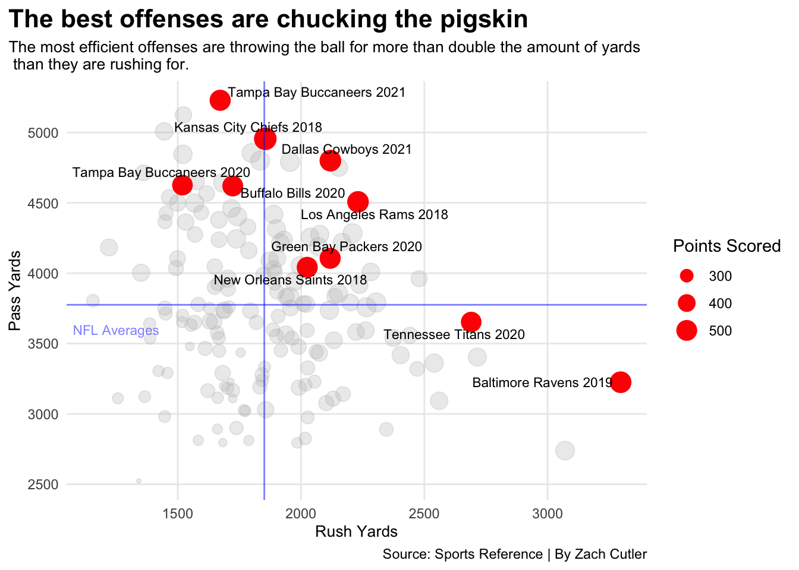

What’s the point of running the football in the modern NFL?
football
nfl
analysis
Author
Zach Cutler
Published
November 4, 2022
The National Football League is an offensive league.
From 2017-2021, scoring in the NFL increased almost every year, reaching an all-time high in 2020 as teams averaged 24.79 points per game. In the last five years, the NFL has introduced new rules limiting the way a defense plays and tackles. Young quarterbacks ripe with talent, seemingly find new ways to take deep shots down the field and be successful. Now more than ever, the NFL is catered toward offensive play.
But the question remains, as NFL offenses throw the ball more, what’s the point of running the football in the modern NFL?
To first answer that question, we need to look at the top-scoring offenses in the NFL in the last five years.
ggplot() +geom_point(data=logs, aes(x=RushYds, y=PassYds, size=PF), color="grey", alpha=.3) +geom_point(data=topscore, aes(x=RushYds, y=PassYds, size=PF), color="red") +geom_text_repel(data=topscore, aes(x=RushYds, y=PassYds, label=teamseason), size=3 ) +geom_vline(xintercept =1850.869, color="blue", alpha=.5) +geom_hline(yintercept =3775.425, color="blue", alpha=.5) +geom_text(aes(x=1250, y=3600), label="NFL Averages", color="blue", size=3, alpha=.5) +theme_minimal() +theme(plot.title =element_text(size =16, face ="bold"),axis.title =element_text(size =10), plot.subtitle =element_text(size=10), panel.grid.minor =element_blank(),plot.title.position ="plot" ) +labs(title="The top scoring offenses are throwing the ball",subtitle="The best offenses are throwing the ball for more than double the amount of yards than they are rushing for.", caption ="Source: Sports Reference | By Zach Cutler",x ="Rush Yards",y="Pass Yards",size="Points Scored" )

Out of the top 10 scoring offenses in the last five years, eight of them had more pass yards than the NFL average. In fact of those eight teams, all of them threw for more than double the number of yards than what they rushed for. In other words, teams that throw the ball more have more successful offenses and are scoring more points. Outside of a couple of outliers in the Tennessee Titans and Baltimore Ravens, the same can’t be said for teams that predicate their offense on the run.
Long gone are the olden days of the full house formation and the Lombardi Sweep. Sorry, Grandpa. In the last four years, teams have used a spread 11 personnel (one running back, one tight end and three receivers) offense 61 percent of the time. Despite the personnel changes and evolution of the passing game, teams are still running the ball. The reason for this? Play-action.
If you watch any NFL team play, chances are you are going to see a lot of play-action. Regardless if a team has a workhorse back or not, most offenses are consistently faking handoffs. Many people argue that the more a team runs the ball, the more their play-action game will open up, leading to increased pass yards per attempt and overall passing game. However, this football myth is not true.
Code
table <- logs %>%group_by(season) %>%arrange(desc(RushAtt)) %>%mutate(rushrank =row_number() ) %>%arrange(desc(PassYA)) %>%mutate(passrank =row_number() ) %>%ungroup() %>%top_n(10, wt=PF) %>%select(season, Team, PF, rushrank, RushAtt, passrank, PassYA) %>%arrange(desc(PF))table %>%gt() %>%cols_label(season ="Season",PF="Points Scored",RushAtt="Rush Attempts",PassYA="Pass Yards Per Attempt",rushrank="Rush Rank",passrank="Pass Rank" ) %>%tab_header(title ="Running to ball doesn't improve the play action game",subtitle ="The 2020 Buccaneers won the Super Bowl with the fourth-worst running attack averaging 7.1 yards per attempt.\n The 2019 Ravens almost had twice as many rushing attempts than the 2020 Buccaneers and only managed 6.9 yards per attempt." ) %>%tab_source_note(source_note =md("**By:** Zach Cutler | **Source:** [Sports Reference](https://www.pro-football-reference.com/years/)") ) %>%tab_style(style =cell_text(color ="black", weight ="bold", align ="left"),locations =cells_title("title") ) %>%tab_style(style =cell_text(color ="black", align ="left"),locations =cells_title("subtitle") ) %>%tab_style(locations =cells_column_labels(columns =everything()),style =list(cell_borders(sides ="bottom", weight =px(3)),cell_text(weight ="bold", size=12) ) ) %>%tab_style(style =list(cell_fill(color ="#E31837"),cell_text(color ="#FFB81C") ),locations =cells_body(rows = PF =="565") ) %>%tab_style(style =list(cell_fill(color ="#241773"),cell_text(color ="white") ),locations =cells_body(rows = PF =="531") ) %>%tab_style(style =list(cell_fill(color ="#D50A0A"),cell_text(color ="#B1BABF") ),locations =cells_body(rows = PF =="492") )
Running to ball doesn't improve the play action game
The 2020 Buccaneers won the Super Bowl with the fourth-worst running attack averaging 7.1 yards per attempt.
The 2019 Ravens almost had twice as many rushing attempts than the 2020 Buccaneers and only managed 6.9 yards per attempt.
There is no correlation between rushing attempts to passing yards per attempt. The Super Bowl-winning 2020 Tampa Bay Buccaneers had the fourth-worst running game yet still had a top 10 passing offense averaging 7.1 yards per passing attempt. On the flip side, the 2019 Ravens, who had an all-time rushing attack and a top-10 passing offense, rushed the ball nearly 600 times, yet had lower pass yards per attempt (6.9) than the 2020 Buccaneers.
So, if running the football doesn’t correlate to play action effectiveness and total points scored, what’s the point of running the ball?
Code
ypg <- logs %>%mutate(rushypg = RushYds/Games, ) %>%summarise(mean(rushypg),mean(ScPer) )ypg <- logs %>%mutate(rushypg = RushYds/Games, ) topscores <- ypg %>%filter(PF>490)ggplot() +geom_point(data=ypg, aes(x=rushypg, y=ScPer), color="grey") +geom_smooth(data=ypg, aes(x=rushypg, y=ScPer), method="lm", se=FALSE, color="#B1BABF") +geom_point(data=topscores, aes(x=rushypg, y=ScPer), color="red") +geom_text_repel(data=topscores, aes(x=rushypg, y=ScPer, label=teamseason), size=3 ) +geom_vline(xintercept =114.2387, color="blue", alpha=.5) +geom_hline(yintercept =36.87188, color="blue",alpha=.5) +geom_text(aes(x=80, y=35), label="NFL Averages", color="blue", alpha=.5, size=3)+theme_minimal() +theme(plot.title =element_text(size =16, face ="bold"),axis.title =element_text(size =8), plot.subtitle =element_text(size=10), panel.grid.minor =element_blank(),plot.title.position ="plot" ) +labs(title="The run game still has a place in the NFL",subtitle="The more effective a team's run game, the more likely are they to score per drive.", caption ="Source: Sports Reference | By Zach Cutler",x ="Rush Yards Per Game",y="Scoring Percentage" )
Teams that run the ball efficiently and consistently every week have a higher chance of scoring every drive. When offenses run the ball, they are more balanced, which takes the load off of the quarterback’s shoulders. This stresses the defense’s discipline as they are forced to play more physically by stuffing run lanes, eating blacks and making tackles.
Los Angeles Chargers head coach Brandon Staley said it best last season when he said, “(The run game) brings a physical dimension to the football game. And what the running game does that the passing game does not, is the running forces the defense to play blocks and to tackle. That happens on a run play — You must play blocks and you must tackle. In the passing game, those things don’t need to happen, right? You don’t have to play as many blocks. And you may not have to tackle based on incomplete or not. So what the running game does is it really challenges your physicality and that’s why I think the run game is important to a quarterback. It’s literally going to allow him to have more space to operate when you do throw the football.”
At the end of the day, the NFL is a passing league. Teams that score the most are throwing the ball across the yard because they have stellar quarterbacks that can flip the field in a single throw. However, teams that establish a run game, introduce the physical element to football, keeping the defense on their toes, resulting in a higher chance of scoring every drive.